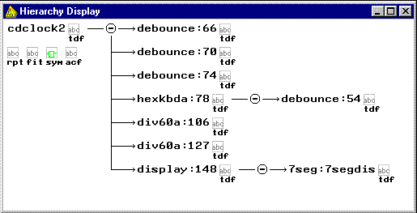

The AHDL source code for the Coundown Project
The hierarchy display for this project is shown on the right. Click on any of the names in the hierarchy display to go directly to the routine associated with that name. Copy and paste the individual code segments and save as the file names given in the SUBDESIGN statements, with a .tdf extension. All code segments start with a TITLE statement and end with "END;". The Windows Clipboard will filter out the HTML tags. Place all code segments in the same folder. Set the project name, assign an EPM7128SLC-84 device to the project and compile the top level code segment (first of the following listings). Use the floorplan editor to assign pins, using details given in the PCB instruction sheets, and recompile. Open the programmer window and download the code into the project PCB. The countdown clock is now ready to perform its functions. Note that I have attempted to align the code in these listings for readability but your browser (or the clipboard) may alter my spacing and result in some unintended misalignments.
 The top level code for the Countdown Clock
The top level code for the Countdown Clock
Title "Count Down clock exercise"; -- Written by: D. N. Warren-Smith, CPEng -- 17 August 1999 -- -- The count down clock will count down minutes and seconds. -- When zero is reached the count down clock will beep and count upwards. -- -- Key Control Functions -- First key = Load and run new Start Value -- Second key = Start/Stop/Pause -- Third key = Toggle display -- "D" keyboard = Switch to Countdown display -- "E" keyboard = Backspace input display -- "F" keyboard = Clear input display -- Restart on zero with Dip switch 1 ON -- Buzzer disabled with Dip switch 8 ON
FUNCTION DEBOUNCE (Clk, Key) RETURNS (pulse); FUNCTION HEXKBDA (clk, reset, row[3..0]) RETURNS (col[3..0], strobe, shift[15..0]); FUNCTION DIV60A (clock, reset, cin, set, dir, uin[3..0], tin[2..0]) RETURNS (cout, u[3..0], t[2..0]); FUNCTION DISPLAY (512hz, dispreg, A[15..0], B[15..0]) RETURNS (seg[6..0], driv[3..0]); FUNCTION OPNDRN (in) RETURNS (out);
SUBDESIGN CDCLOCK2 ( clock, reset : INPUT; -- 1024 Hz from 4060B plus_key : INPUT; -- first push button key minus_key : INPUT; -- second push button key clear_key : INPUT; -- third push button key 512Hz : INPUT; -- multiplexer clock row[3..0] : INPUT; -- Sense rows dip[4..1] : INPUT; -- DIP switches dip8 : INPUT; -- DIP switch 8 sparein : INPUT; -- Spare input not used col[3..0] : OUTPUT; -- drive columns low dr[4..1] : OUTPUT; -- transistor driver signals s[6..0] : OUTPUT; -- 7-segment outputs dp[4..1] : OUTPUT; -- decimal point LEDs buz : OUTPUT; -- piezo buzzer led : OUTPUT; -- separate LED startreg : OUTPUT; -- Temp for test dispreg : OUTPUT; -- Temp for test ) VARIABLE start : soft; set : soft; strobe : soft; toggle : soft; usec[3..0] : node; tsec[2..0] : node; umin[3..0] : node; tmin[2..0] : node; csout : soft; restart : soft; -- Restart on zero dir : dff; -- count direction, 0 = down, 1 = up zerom1 : lcell; -- zero minus 1 zero : lcell; -- counted down to zero zerop1 : dff; -- zero plus 1 alarm[1..0] : dff; -- indicate zero reached shift[15..0] : node; -- input shift register for display time[15..0] : node; -- count down time display pre : soft; -- prescaler counter at zero prect[9..0] : dff; -- prescaler counter dispreg : dff; -- determine which display required startreg : tff; -- set when counting down started col[3..0] : OPNDRN; -- column drivers tri-stated
BEGIN -- Debounce the start/stop, set and toggle keys start = debounce(clock, minus_key); -- 2nd push button set = debounce(clock, plus_key); -- 1st push button toggle = debounce(clock, clear_key); -- 3rd push button
-- Prescaler counter prect[].clk = clock; prect[].clrn = reset & !set & startreg; prect[] = prect[] + 1; pre = (prect[] == H"3ff");
-- Connect up the hex keypad (col[3..0], strobe, shift[15..0]) = HEXKBDA (clock, reset, row[3..0]);
-- Start the countdown startreg.clk = clock; startreg.clrn = reset; startreg.t = start;
-- restart on zero or set option restart = set # zerop1 & !dip1;
-- Count down circuits (csout, usec[3..0], tsec[2..0]) = DIV60A (clock, reset, startreg & pre, restart, dir, shift[3..0], shift[6..4]); ( , umin[3..0], tmin[2..0]) = DIV60A (clock, reset, csout, restart, dir, shift[11..8], shift[14..12]); time[] = (0, tmin[2..0], umin[3..0], 0, tsec[2..0], usec[3..0]);
-- Count down at zero zerom1 = (tmin[] == 0) & (umin[] == 0) & -- zero minus 1 (tsec[] == 0) & (usec[] == 1) & dir; zero = (tmin[] == 0) & (umin[] == 0) & -- at zero (tsec[] == 0) & (usec[] == 0); zerop1.clk = clock; zerop1.clrn = reset; zerop1 = zero & pre;
-- Set the count direction, 0 = count up, 1 = count down dir.clk = clock; dir.clrn = reset; IF set THEN dir = VCC; ELSIF zero & dip1 THEN dir = GND; ELSE dir = dir; END IF;
-- Determine the display required -- dispreg low = Display Time, dispreg high = Display input register dispreg.clk = clock; IF toggle THEN dispreg = dispreg $ VCC; ELSIF start # set THEN dispreg = GND; ELSIF strobe THEN dispreg = VCC; ELSE dispreg = dispreg; END IF;
-- Setup the display circuits (s[], dr[]) = DISPLAY (512hz, dispreg, time[], shift[]);
-- Indicate that zero has been reached alarm[].clk = clock; alarm[].clrn = reset; IF set THEN alarm[] = 0; ELSIF zerom1 & pre THEN alarm[] = 1; ELSIF (alarm[] != 0) & pre THEN alarm[] = alarm[] + 1; ELSE alarm[] = alarm[]; END IF;
-- Activate buzzer when zero reached buz = startreg & (alarm[] != 0) & dip8 & (!prect9 # !prect8 & !prect7) & !prect6;
-- Connect unused inputs and outputs for compatibility led = startreg; dp1 = !dispreg; dp2 = dispreg; dp[4..3] = !(dip2 & dip3 & dip4 & sparein);
END;
The debounce Circuit
Title "Key debounce circuit"; -- Written by: D. N. Warren-Smith, CPEng SUBDESIGN DEBOUNCE ( Clk : INPUT; Key : INPUT; -- active low input pulse : OUTPUT; -- output on count of 2 ) VARIABLE cnt[1..0] : DFF; BEGIN cnt[].clk = clk; cnt[].clrn = !key; -- clear during contact bounce IF (cnt[] <= 2) & !key THEN cnt[] = cnt[] + 1; ELSE cnt[] = cnt[]; END IF; pulse = (cnt[] == 2); -- accept key on count of 2 END;
The Keypad encoder circuit
Title "Keypad encoder circuit"; -- Written by: D. N. Warren-Smith, CPEng -- Keypad scanning circuit -- Keys A to F special functions FUNCTION debounce (clk, key) RETURNS (pulse); SUBDESIGN hexkbda ( clk : INPUT; -- Clock source on global input reset : INPUT; -- Reset on global input row[3..0] : INPUT; -- Sense keypad rows col[3..0] : OUTPUT; -- Drive columns strobe : OUTPUT; -- key pressed shift[15..0] : OUTPUT; -- Shift register output ) VARIABLE key_pressed : soft; -- High when a key pressed mat[3..0] : soft; -- key conversion matrix d[3..0] : DFF; -- Control counter inp0[3..0] : DFF; -- First stage of shift register inp1[3..0] : DFF; -- Second stage of shift register inp2[3..0] : DFF; -- Third stage of shift register inp3[3..0] : DFF; -- Fourth stage of shift register shift[15..0] : soft; -- combined shift register output strobe : soft; -- valid keypress sensed
BEGIN -- Column drivers, active low col0 = !(d[3..2] == 0); col1 = !(d[3..2] == 1); col2 = !(d[3..2] == 2); col3 = !(d[3..2] == 3);
-- Sense keyboard rows with a multiplexer key_pressed = !row3 & ((d1,d0) == 3) # !row2 & ((d1,d0) == 2) # !row1 & ((d1,d0) == 1) # !row0 & ((d1,d0) == 0); -- muxout = !key_pressed; -- Used for simulation only
-- Scan the keyboard until a key is pressed d[].clk = clk; IF !key_pressed THEN d[] = d[] + 1; ELSE d[] = d[]; END IF;
-- Generate strobe when key press has settled strobe = debounce(clk, !key_pressed);
-- The key scan matrix TABLE d[] => mat[]; H"0" => H"1"; H"1" => H"4"; H"2" => H"7"; H"3" => H"F"; H"4" => H"2"; H"5" => H"5"; H"6" => H"8"; H"7" => H"0"; H"8" => H"3"; H"9" => H"6"; H"A" => H"9"; H"B" => H"E"; H"C" => H"A"; H"D" => H"B"; H"E" => H"C"; H"f" => H"D"; END TABLE;
-- The data shift register circuit inp0[].clk = clk; inp0[].clrn = reset; inp1[].clk = clk; inp1[].clrn = reset; inp2[].clk = clk; inp2[].clrn = reset; inp3[].clk = clk; inp3[].clrn = reset;
-- F (*) clear input register, E (#) Backspace input register -- key 0 to 9 = enter digit from right -- any key A to C switches the display but does not input IF strobe & (mat[] == 15) THEN inp0[] = 0; inp1[] = 0; inp2[] = 0; inp3[] = 0; ELSIF strobe & (mat[] == 14) THEN inp0[] = inp1[]; inp1[] = inp2[]; inp2[] = inp3[]; inp3[] = 0; ELSIF strobe & (mat[] <= 9) THEN inp0[] = mat[]; inp1[] = inp0[]; inp2[] = inp1[]; inp3[] = inp2[]; ELSE inp0[] = inp0[]; inp1[] = inp1[]; inp2[] = inp2[]; inp3[] = inp3[]; END IF;
-- Combine shift register into one statement shift[] = (inp3[], inp2[], inp1[], inp0[]); END;
Divide by 60 counter
TITLE "Divide by 60 counter."; % File: div60A.tdf Date: 18 Aug 1995 Updated: 17 Aug 1999 Prepared by: D. N. Warren-Smith, CPEng This version of DIV60 does: Parallel set instead of increment set % SUBDESIGN DIV60A ( clock, reset, -- global clock and reset cin : input; -- carry in set : input; -- run : (set = 0), set : (set = 1) dir : input; -- 0 = count up, 1 = count down uin[3..0] : input; -- units to load tin[2..0] : input; -- tens to load cout : output; -- carry out u[3..0] : output; -- Units output t[2..0] : output; -- Tens output ) VARIABLE u[3..0], t[2..0] : DFF; car : SOFT; BEGIN car = cin & !set;
u[].clk = CLOCK; u[].clrn = reset; IF set then u[] = uin[]; ELSIF car & dir & (u[] == 0) then u[] = 9; ELSIF car & dir then u[] = u[] - 1; ELSIF car & !dir & (u[] == 9) then u[] = 0; ELSIF car & !dir then u[] = u[] + 1; ELSE u[] = u[]; END IF;
t[].clk = CLOCK; t[].clrn = reset; IF set then t[] = tin[]; ELSIF car & dir & (t[] == 0) & (u[] == 0) then t[] = 5; ELSIF car & dir & (u[] == 0) then t[] = t[] - 1; ELSIF car & !dir & (t[] == 5) & (u[] == 9) then t[] = 0; ELSIF car & !dir & (u[] == 9) then t[] = t[] + 1; ELSE t[] = t[]; END IF;
cout = (u[] == 0) & (t[] == 0) & cin & !set & dir # (u[] == 9) & (t[] == 5) & cin & !set & !dir; END;
Display Multiplexer circuits
Title " Multiplexer circuits"; % File: DISPLAY.TDF Updated: 2 July 1996 Written by: D. N. Warren-Smith, CPEng % FUNCTION 7SEG (d[3..0]) RETURNS (s[6..0]); SUBDESIGN DISPLAY ( 512hz : INPUT; -- Multiplexer clock dispreg : INPUT; -- Display register, 0=A, 1=B A[15..0] : INPUT; -- Register A B[15..0] : INPUT; -- Register B seg[6..0] : OUTPUT; -- 7-segment output driv[3..0] : OUTPUT; -- drivers for multip/r transistors ) VARIABLE mul[1..0] : tff; -- Multiplexer clock source 7segdis : 7SEG; -- A variable to convert to 7 seg mx[15..0] : node; -- 1st level multiplexer outputs d7[3..0] : lcell; -- 2nd level multiplexer outputs BEGIN -- Multiplexer clock source mul[].clk = 512hz; mul[].t = (mul0.q, vcc); -- Divide by 4 counter
-- First level Multip/r combines A and B register inputs mx[] = !dispreg & A[] # dispreg & B[];
-- Second level Multiplexers combine 4 digits for display d7[] = (mul[] == 0) & mx[3..0] # (mul[] == 1) & mx[7..4] # (mul[] == 2) & mx[11..8] # (mul[] == 3) & mx[15..12];
7segdis.d[] = d7[]; -- Apply multi/r sigs to 7-seg decoder seg[] = 7segdis.s[]; -- Connect decoder to outputs -- 0 = seg-a, 1 = seg-b etc.
-- Decode m/p driver counter for common anode tr. Drivers driv0 = !(mul[] == 0); -- Active low outputs driv1 = !(mul[] == 1); driv2 = !(mul[] == 2); driv3 = !(mul[] == 3); END;
7-segment display driver circuit
Title "7 segment display driver circuit"; -- D. N. Warren-Smith, CPEng SUBDESIGN 7SEG ( D[3..0] : INPUT; -- BCD input S[6..0] : OUTPUT; -- 7 segment outputs ) BEGIN TABLE % Inputs => g,f,e,d,c,b,a (Outputs) ------ ----------------------- % d[3..0] => s[6..0]; H"0" => B"1000000"; -- H"40" H"1" => B"1111001"; -- H"79" H"2" => B"0100100"; -- H"24" H"3" => B"0110000"; -- H"30" H"4" => B"0011001"; -- H"19" H"5" => B"0010010"; -- H"12" H"6" => B"0000010"; -- H"02" H"7" => B"1111000"; -- H"78" H"8" => B"0000000"; -- H"00" H"9" => B"0010000"; -- H"10" H"A" => B"0001000"; -- H"08" H"B" => B"0000011"; -- H"03" H"C" => B"1000110"; -- H"46" H"D" => B"0100001"; -- H"21" H"E" => B"0000110"; -- H"06" H"F" => B"0001110"; -- H"0E" END TABLE; END;
End of AHDL code
Return to Project Board page OR Navigation menu at the top of the page OR continue with VHDL Source code:
Copyright D.N. Warren-Smith, CPEng. Digital Logic Systems
Last edited: 28 January, 2002